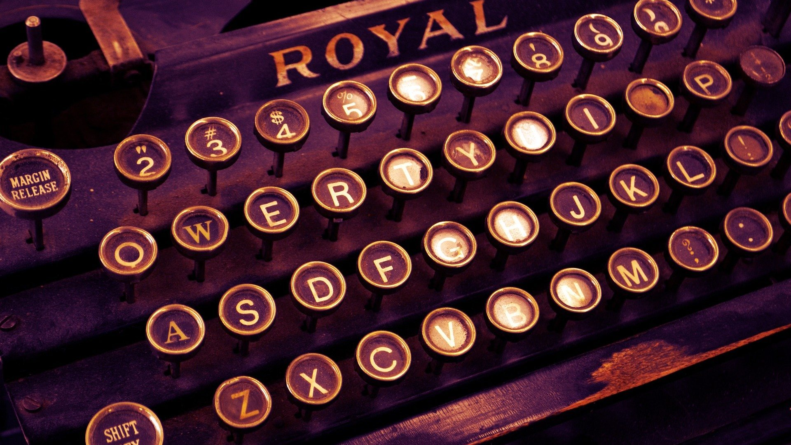
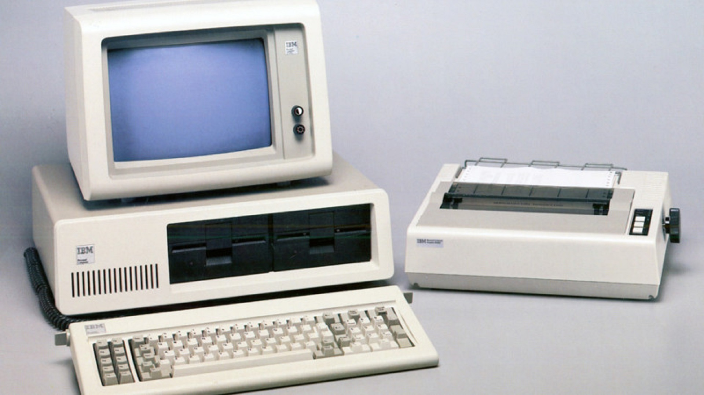
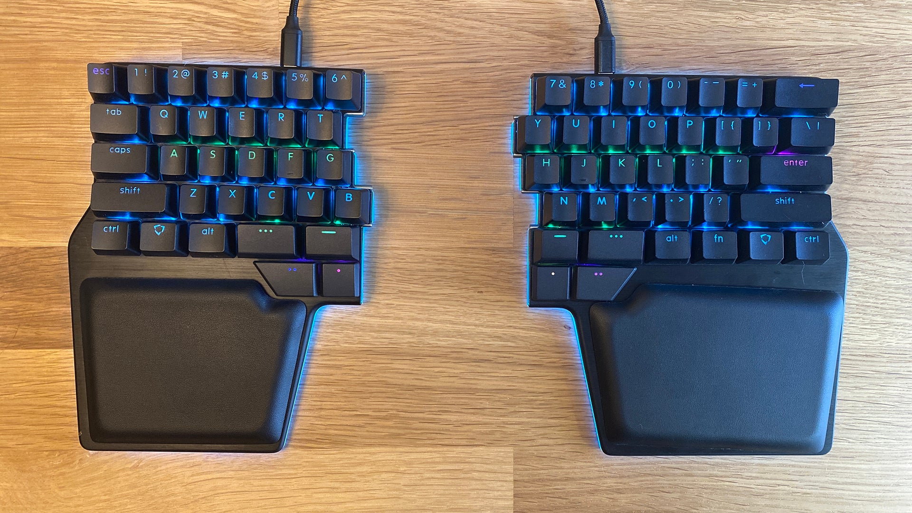

Klawiatury komputerowe przeszły długą drogę od mechanicznych maszyn do pisania do nowoczesnych, personalizowanych modeli.
Początki: Klawiatury mechaniczne zostały opracowane dla operatorów telegrafów w XIX wieku, a następnie dostosowano je do wczesnych komputerów. Maszyny obliczeniowe współpracowały z klawiaturami w celu dziurkowania kartek papieru jako zapisywanie danych.

Standard QWERTY: Układ QWERTY, został opracowany dla maszyn do pisania i stał się podstawą dla klawiatur. Został zaprojektowany w celu zapobiegania zacinania się maszyn do pisania co w klawiaturach już nie jest problemem. Dlatego pojawiają się układy takie jak DVORAK i COLEMAK.
Pierwsze komputery osobiste: Na końcu lat 80 i początku 90 IBM wprowadził pierwszy komputer, IBM 5150 wraz z nim klawiaturę. Komputer ten nie używał myszki. Wraz z rozwojem komputerów wzrosła produkcja klawiatur a potem myszek co skutkowało wieloma modelami o różnych zastosowaniach. Na przestrzeni lat 90 przełączniki mechaniczne zamieniono na gumowe membrany, ponieważ były tańsze w produkcji.
Nowoczesność: Obecnie klawiatury oferują wiele opcji personalizacji, mechaniczne przełączniki wróciły do łask, a technologia bezprzewodowa umożliwiła większą mobilność.
Historia klawiatur komputerowych to historia ciągłego dopasowywania się do zmieniających potrzeb użytkowników. Od maszyn do pisania do nowoczesnych i ergonomicznych modeli.